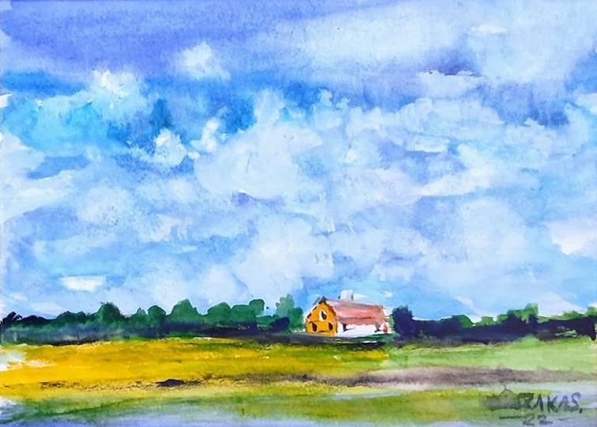

Rašau...
Per gyvenimą greitai nueisiu.
Pėdos, nors neryškios, pasiliks.
Rasite eiles, paveikslus,
Pasiimkite, jeigu patiks...
Gal ištips mažytė mano brydė
Vos tiktai papūtus vėjui, dar ryte
Ir subėgs tie žodžiai mano parašyti
Į didžiulę žodžių pievą vakare...
Man neskauda, man be galo gera,
Kad šiandieną dar galiu rašyti
Ir galiu kasdien per žodžių pievą žalią
Kaip vaikystėje lakstyti ir lakstyti...
Per gyvenimą baigiu nueiti.
Neieškokite pėdų geriau,
Tik, žinokit, kad kitaip sunku gyventi,
Tai todėl - rašysiu kaip rašiau...

Be pavadinimo